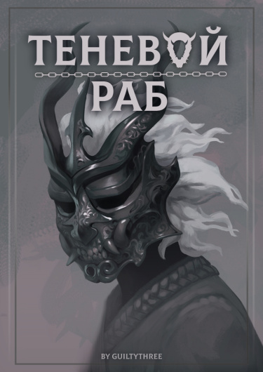
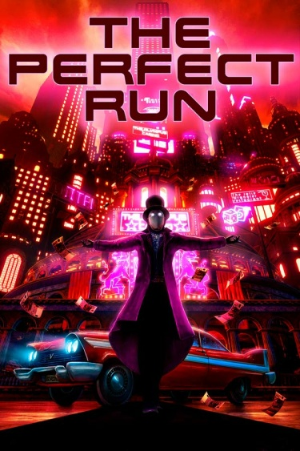
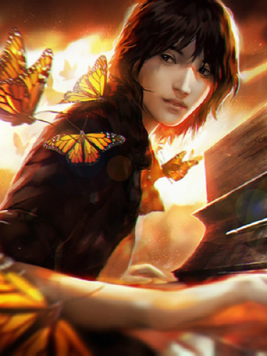

Книги
-
Теневой Раб
Выросший в бедности, Санни никогда не ждал от жизни ничего хорошего. Однако даже он не ожидал, что будет избран Заклятием Кошмара и станет одним из Пробужденных - элитной группы людей, наделенных сверхъестественными способностями. Перенесенный в разрушенный магический мир, он оказался лицом к лицу с ужасными монстрами - и другими Пробужденными - в смертельной битве за выживание. Хуже того, божественная сила, которую он получил, оказалась с небольшим, но потенциально смертельным побочным эффектом...
Мое самое любимое произведение, читая его, я не ни на секунду не потерял интерес к нему. Думаю, что это одно из лучших произведений, что я читал за все время.
-
Идеальный Забег
«Райан «Квиксейв» Романо - эксцентричный искатель приключений со странной силой: он может сохраниться во времени и повторять свою жизнь всякий раз, когда умирает.
Прибыв в Новый Рим, блестящую столицу греха возрождающейся Европы, он обнаруживает, что город разрывается между мега-корпорациями, спонсируемыми героями, супер-злодеями и настоящими монстрами.
Это время хаоса, когда зелья могут дать власть править миром, а опасности таятся повсюду.
Райан видит различные руты: от Героя до Злодея, и он попробует их все.
Только тогда он достигнет идеальной концовки... неважно сколько циклов это займет».
Сложно описать насколько это офигенное произведение, юмор в нем на высшем уровне, повествование взрывает мозг, а сама история невероятно меня тронула.
-
Свободное Падение
Призраки - это генетически измененные люди, обладающие особыми способностями. Однако Способность не всегда означает силу: чаще всего она просто делает вас мишенью. Это особенно верно для Мэтью, который может быть одним из самых могущественных призраков в мире - и поэтому вынужден скрывать свою силу и использовать хитрость, чтобы выжить. А еще есть девушка, которая хочет, чтобы он присоединился к ее рок-группе...
Короткая, но прекрасная история, рассказывающая о любви, жизни и затрагивающая актуальные проблемы, раскрывая их под разными углами. Финал заставил меня прослезиться, я еще долго буду помнить эту историю.